Work builds on 2025-01-28-ggkids and daphne package (now deprecated).
The goal of ggkids is to …
Nope, not a package yet! You can install the development version of ggkids from GitHub with:
# install.packages("pak")
pak::pak("EvaMaeRey/ggkids")ggkids is about bringing the grammar of graphics and ggplot2 to young learners.
ggplot2 is quite logical and accessible, but may present some challenges for young learners given a more limited vocabulary and little experience interpreting error messages.
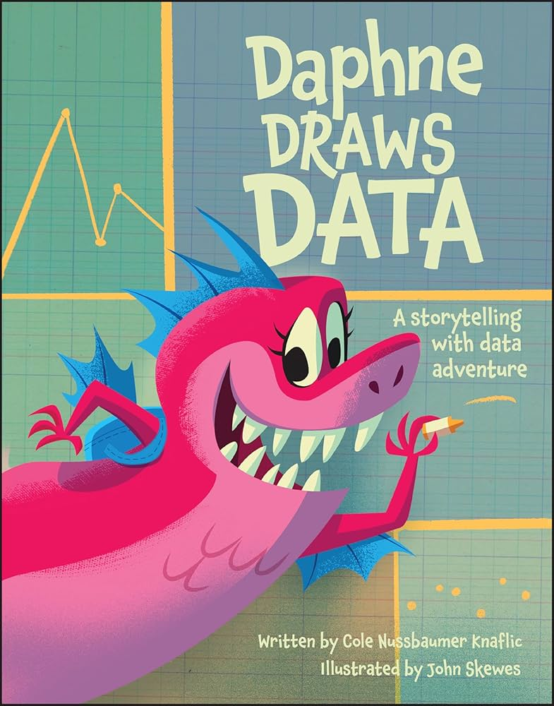
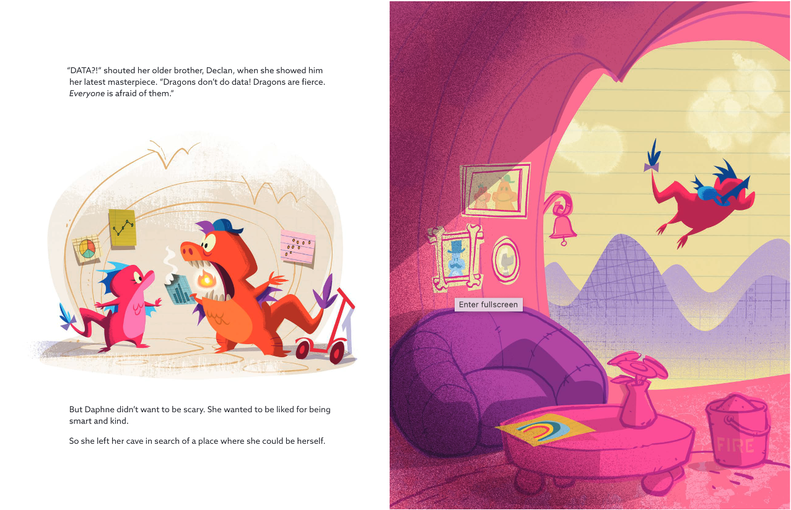
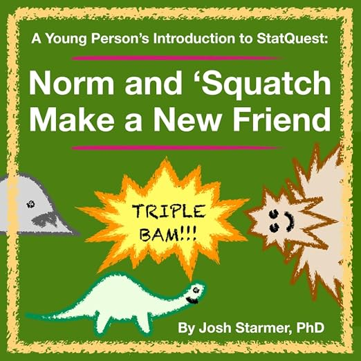
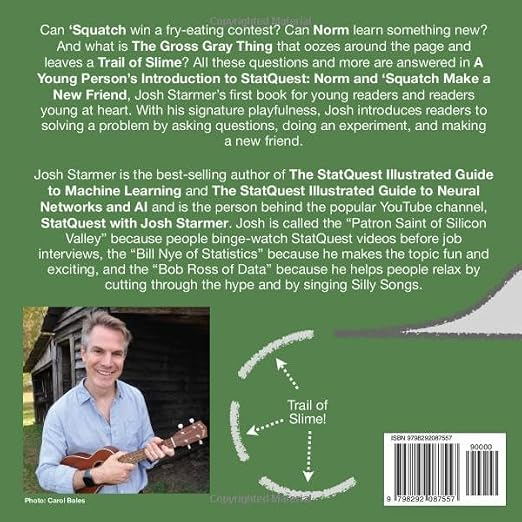
ggkids() is an alias for ggplot(). It can be used to initialized the plot and set global data just like ggplot(), but ggkids might be preferred if you want to more strongly signal ‘this version is just for you, kiddos!’. But brings along it’s own theme.
#' @export
theme_kids <- function(paper = "grey98",
ink = "grey30",
base_size = 30,
base_family = "Comic Sans MS", ...){
ggplot2::theme_classic(paper = paper,
ink = ink,
base_size = base_size,
base_family = base_family, ...
)
}
# todo... move to theme
update_geom_defaults(GeomPoint, aes(size = from_theme(pointsize * 3)))
update_geom_defaults(GeomText, aes(size = from_theme(pointsize * 3)))
#' @export
label_title <- function(title){labs(title = title)}
#' @export
label_subtitle <- function(subtitle){labs(subtitle = subtitle)}
#' @export
label_caption <- function(caption){labs(caption = caption)}
write_table <- function(...){tribble(...) |> mutate(across(where(is.character), forcats::fct_inorder))}
# write_table(~pets, ~number_of_pets,
# "🐱", 30,
# "🐶", 25,
# "🦚", 10,
# "🐠", 15,
# "🐰", 5)
ggplot(cars) +
aes(speed, dist) +
geom_point() +
geom_text(label = "🎈") +
theme_kids() 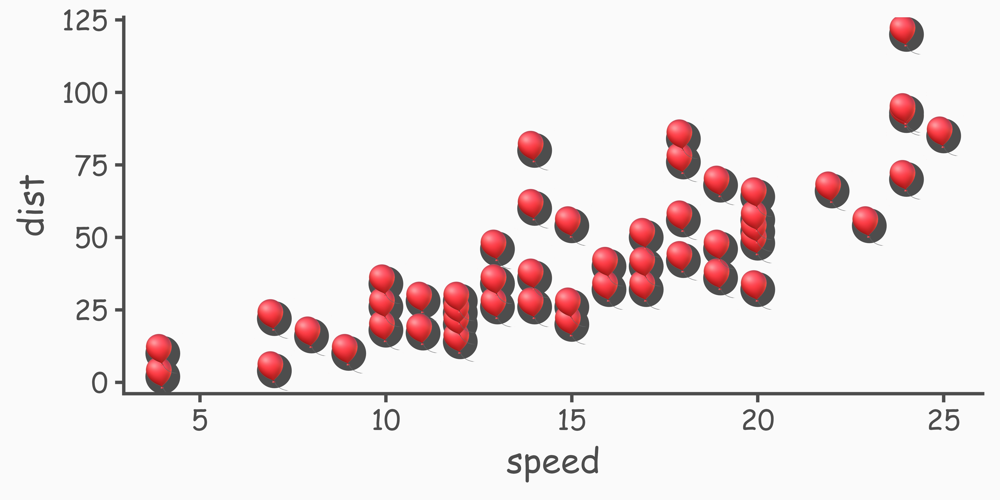
ggkids <- function(data,
spec_theme = theme_kids()){
ggplot2::ggplot(data = data) + spec_theme
}
ggkids(cars) +
aes(speed, dist) +
geom_point()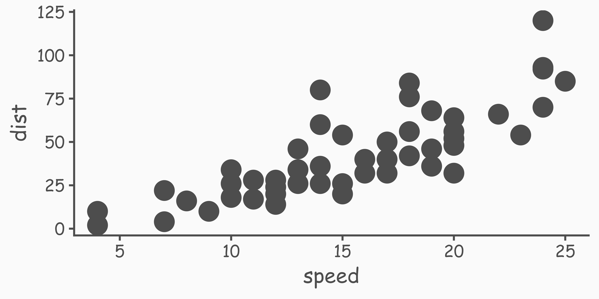
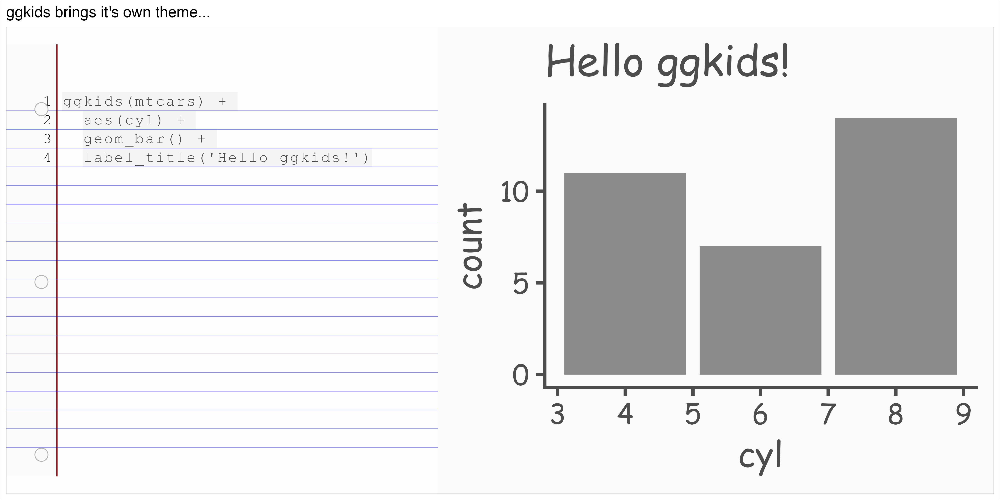
use is an alias for aes, since ‘aesthetic’ is unlikely to be in the vocabulary of young learners. We think that you might say ‘let’s use color to communicate about height’ (use the color aesthetic channel to communicate about ‘var1’) or ‘use size’ might be a natural way to talk about aesthetic mapping with children.
A series of use_*() functions are also available and facilitate more step-wise plot construction, e.g. use_x(), use_y(), use_size(), use_linewidth() 🚧 One thing people struggle with including me is the color aesthetic. It sometimes feels like fill might better be called color, and color something (outline_color?); If this is done using open point (shape = 21), would probably be the way to go too.
#' @export
encode <- function(color, ...){
aes(color = {{color}}, fill = {{color}}, ...)
}
#' @export
viz <- function(color, ...){
aes(color = {{color}}, fill = {{color}}, ...)
}
#' @export
use_x <- function(x){aes(x = {{x}})}
#' @export
label_x <- function(x){labs(x = x)}
#' @export
use_y <- function(y){list(aes(y = {{y}}))}
#' @export
label_y <- function(y){labs(y = y)}
#' @export
label_color <- function(color){labs(fill = color,
color = color)}
#' @export
use_weight <- function(weight){aes(weight = {{weight}})}
#' @export
use_area <- function(area){aes(weight = {{area}})}
#' @export
use_rows <- function(rows, cols, ...){facet_grid(rows = vars({{rows}}), cols = vars({{cols}}), ...)}
#' @export
use_columns <- function(cols, rows, ...){facet_grid(rows = vars({{rows}}), cols = vars({{cols}}), ...)}
#' @export
use_rows_columns <- function(rows, cols, ...){facet_grid(rows = vars({{rows}}), cols = vars({{cols}}), ...)}
#' @export
use_wrap <- function(wrap, ...){facet_wrap(facets = vars({{wrap}}), ...)}
#' @export
use_size <- function(size){aes(size = {{size}})}
#' @export
use_shape <- function(shape){aes(shape = {{shape}})}
#' @export
use_color <- function(color){aes(fill = {{color}})}
#' @export
use_group <- function(group){aes(group = {{group}})}
#' @export
use_color_line <- function(color){aes(color = {{color}})}
#' @export
use_chart_point <- function(...){qlayer(geom = qproto_update(GeomPoint, aes(shape = 21),
required_aes = c()),
stat = qstat(function(data, scales){data$x <- data$x %||% 0 ; data$y <- data$y %||% 0; data}), ...)}
# data <- function(data){ggplot(data |> remove_missing()) + theme_classic(ink = "darkgrey", paper = "whitesmoke", base_size = 18)}
# chart_jitter <- geom_jitter
# chart_heat <- function(...){list(
# qlayer(geom = GeomTile,
# stat = qproto_update(StatSum, aes(fill = after_stat(n), size = NULL)), ...),
# scale_fill_gradientn(colors = c("blue", "white", "yellow", "orange", "red")),
# theme(panel.grid.minor = element_line(color = "darkgrey")))
# }
#
# title <- function(title){labs(title = title)}
# subtitle <- function(subtitle){labs(subtitle = subtitle)}
# caption <- function(caption){labs(caption = caption)}
# tag <- function(tag){labs(tag = tag)}More aesthetic defaults are provided, rather than required for layer rendering. e.g. to add a point layer, x and y are not required, but instead default to zero. We think inspecting a plot with a zero default might be more useful than reading an error message for very young learners. 🚧 This is done using the helper function, aes_default.
New picture aesthetic will play more of a role - because kids love pictures, and faces, etc. stamp_picture() is lets you add an annotation layer in an arbitrary place on your plot, e.g. stamp_picture(🚀, x = 4, y = 10) - position default is the middle of the plot, i.e. x = I(.5), y = I(.5) and picture default is a classic smiley 🙂.
We introduce chart_*() series which can be used similar to layer functions (geom_* and stat_*), however they bring defaults that are appropriate for the chart type in question, e.g. chart_plunging_bar() wraps up geom_bar(stat = "identity") with scale_y_reverse(). Available chart functions: chart_bar, chart_item_stack
Some of the chart functions are supported with new Stats, which are StatItemStack, StatPointCount,
library(statexpress)
library(tidyverse)
# update_geom_defaults(GeomPoint, aes(size = from_theme(pointsize * 3)))
#' @export
aes_default <- function(default = aes(x = 0)) {
structure(
list(
default_spec = default),
class = "aes_default"
)
}
#' @import ggplot2
#' @importFrom ggplot2 ggplot_add
#' @export
ggplot_add.aes_default <- function(object, plot, object_name) {
if(is.null(plot$mapping[[names(object$default_spec)]])){
plot <- plot + object$default_spec
}
plot
}
#' @export
chart_pie <- function(...){
list(
geom_bar(position = "fill", width = 1, show.legend = F, ...),
# add defaults that bar doesn't usually include
aes_default(aes(y = .5)),
aes_default(aes(fill = "All")),
aes_default(aes(weight = 1)),
aes_default(aes(color = from_theme(paper))),
# add labels
stat_count(geom = GeomLabel, color = "transparent",
position = position_fill(vjust = .5),
aes(label = after_stat(fill),
y = .9,
# group = after_stat(fill)
), alpha = 0,
show.legend = F,
size = 30
),
coord_polar(),
theme(axis.text = element_blank(),
axis.ticks = element_blank(),
axis.line = element_blank(),
axis.title = element_blank(),
panel.grid = element_blank()),
labs(fill = NULL)
)
}
pets_table <- data.frame(pets = c("🐱", "🐶", "🦚", "🐠", "🐰"),
number_of_pets = c(30, 25, 10, 15, 5)) |>
mutate(pets = fct_infreq(pets, number_of_pets) |> fct_rev())
usethis::use_data(pets_table, overwrite = T)
pets_table
#> pets number_of_pets
#> 1 🐱 30
#> 2 🐶 25
#> 3 🦚 10
#> 4 🐠 15
#> 5 🐰 5
pets_table |>
ggplot() +
chart_pie() +
use_color(pets) +
use_area(number_of_pets)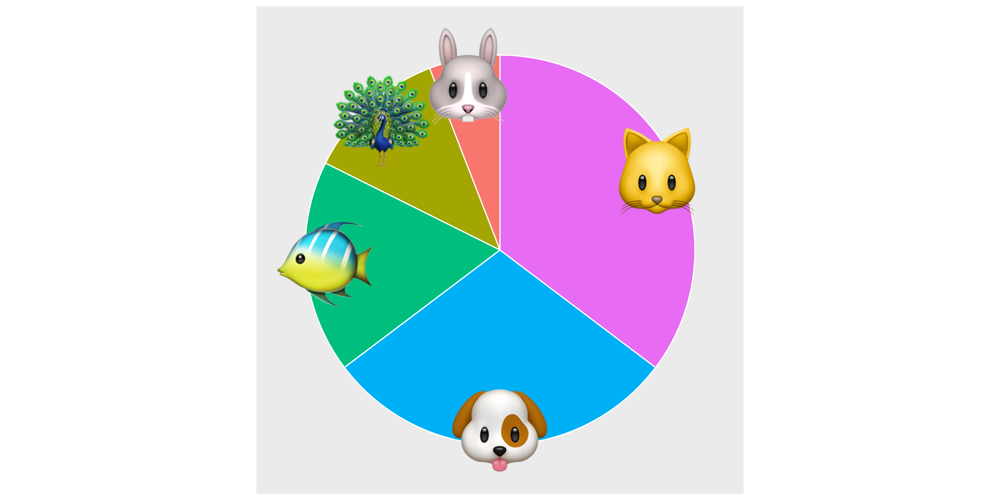
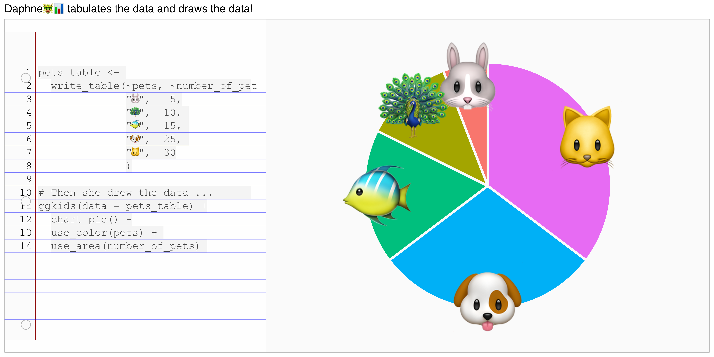
library(tidyverse)
types <- c("🦐", "🦀")
set.seed(1234)
ocean_table <- cars |>
rename(size = dist) |>
mutate(type = c(
rep("🦐", 20),
sample(types, 10, replace = T),
rep("🦀", 20))) |>
sample_frac()
#' @export
GeomPointFill <- qproto_update(GeomPoint, aes(shape = 21),
required_aes = c())
library(statexpress)
chart_mark <- function(...){
list(stat_identity(geom = GeomText, show.legend = F, ...),
aes_default(aes(x = 0)),
aes_default(aes(y = 0)),
# aes_default(aes(shape = I(after_stat(picture)))),
scale_size(range = c(2,10)),
aes_default(aes(label = "x"))
)
}
chart_point <- function(...){
list(stat_identity(geom = GeomPointFill, show.legend = F, ...),
aes_default(aes(x = 0)),
aes_default(aes(y = 0)),
# aes_default(aes(shape = I(after_stat(picture)))),
scale_size(range = c(2,10))
)
}
chart_picture <- chart_point
# should replace with lm xy
chart_fit_global_line <- function(...){
geom_smooth(method = lm, ..., show.legend = F, se = F,
linetype = "dashed",
aes(shape = NULL,
picture = NULL,))
}
set_picture <- function(picture){aes(shape = I({{picture}}))}
use_picture <- function(picture){aes(label = {{picture}})}
head(ocean_table)
#> speed size type
#> 1 13 26 🦐
#> 2 7 22 🦐
#> 3 18 76 🦀
#> 4 20 32 🦀
#> 5 14 60 🦀
#> 6 15 54 🦀
ocean_table |>
ggkids() +
use_y(speed) +
use_x(size) +
chart_point() +
use_picture(type) +
use_size(size) +
chart_fit_global_line()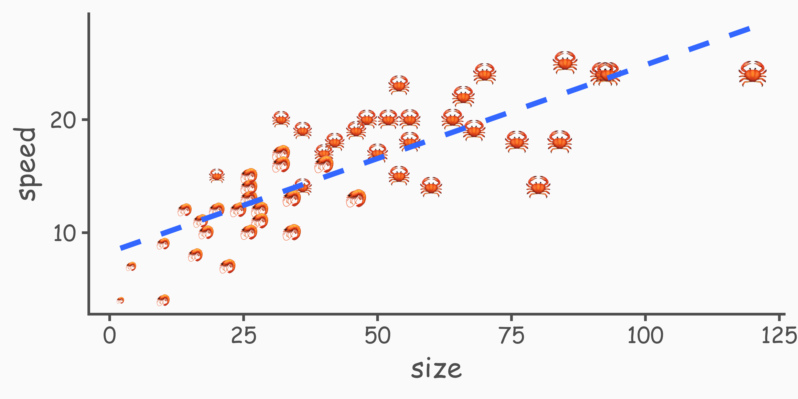
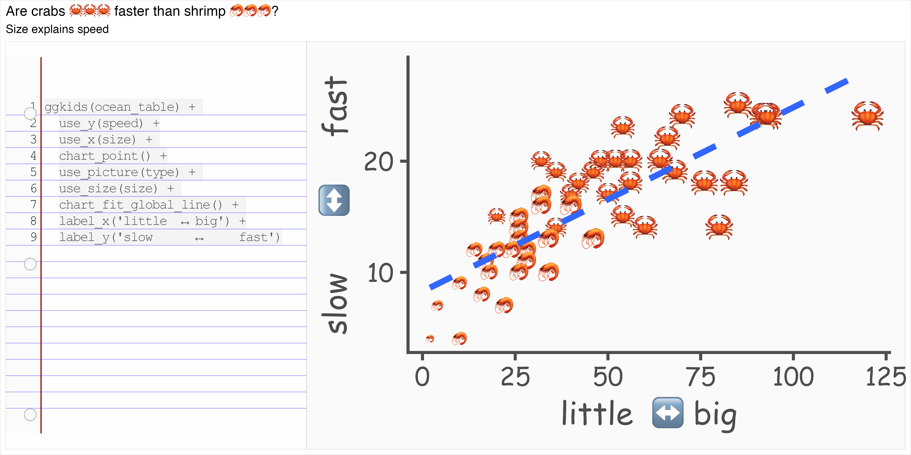
(Norm and ’Squatch Make a New Friend - Joshua Starmer)
real_fries_table <- data.frame(id_fry = 1:7,
seconds = c(1, 1, 2, 1, 2, 3, 1) |> as.character(),
height = c(1, 2, 1, 3, 2, 1, 4),
item = rep("🟨",7))
all_fries_table <- data.frame(id_fry = 1:10,
seconds = c(1, 1, 2, 1, 2, 3, 1, 1,2,3) |> as.character(),
height = c(1, 2, 1, 3, 2, 1, 4, 5, 3, 2),
item = c(rep("🟨", 7),
rep("🟩", 3),
ind_real = c())
)
imaginary_fries_table <- all_fries_table |> slice(8:10)
chart_tile <- function(...){
list(
qlayer(geom = qproto_update(GeomTile, aes( width = .75, height = .75)), ...),
coord_equal()
)
}
set_color <- function(color){
aes(fill = I(color |> alpha(.5)) , color = I(color))
}
real_fries_table |>
ggkids() +
encode(x = seconds,
y = height,
picture = item) +
chart_mark() 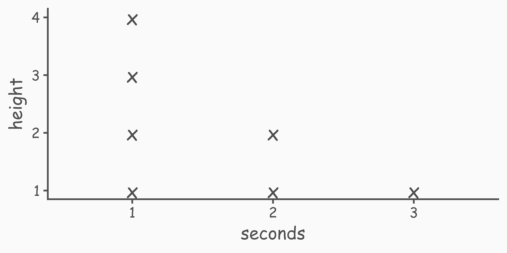
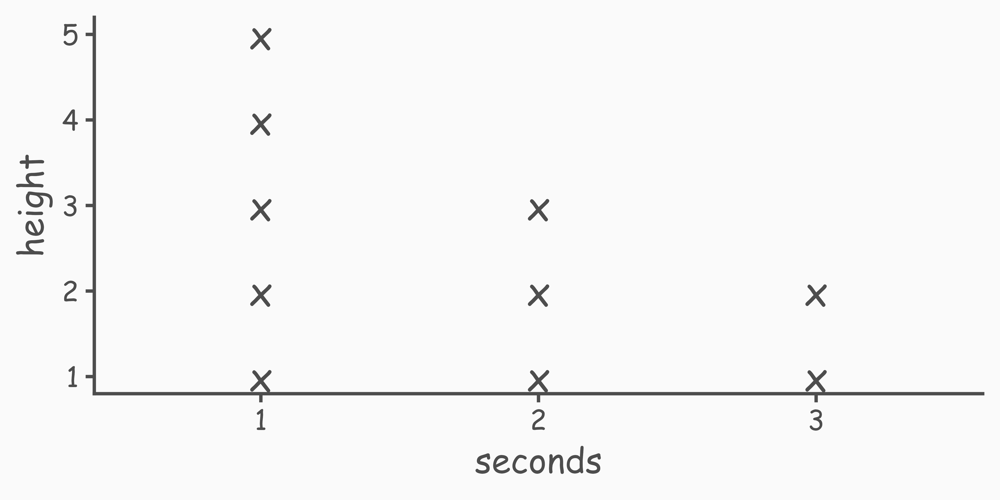
real_fries_table |>
ggkids() +
encode(x = seconds, y = height) +
chart_tile() +
set_color("goldenrod2")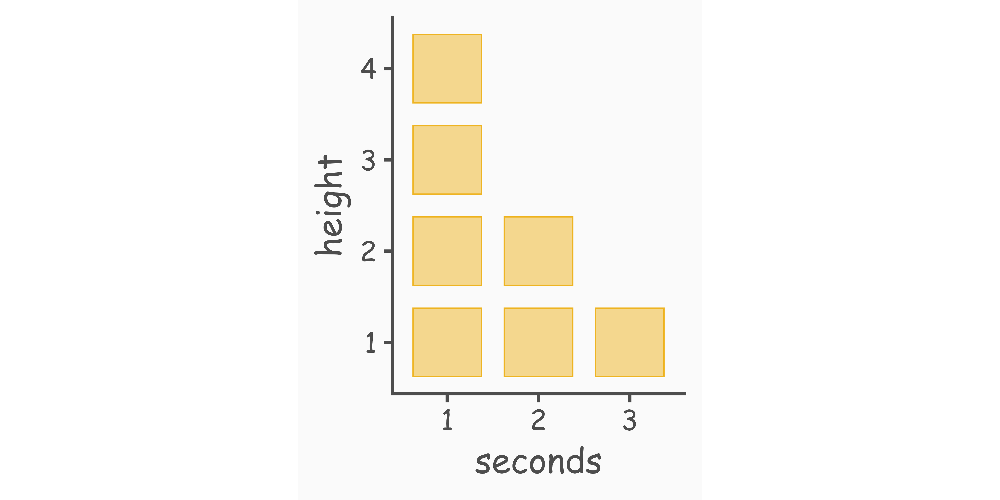
last_plot() +
chart_tile(
data = imaginary_fries_table,
set_color("darkseagreen4")
)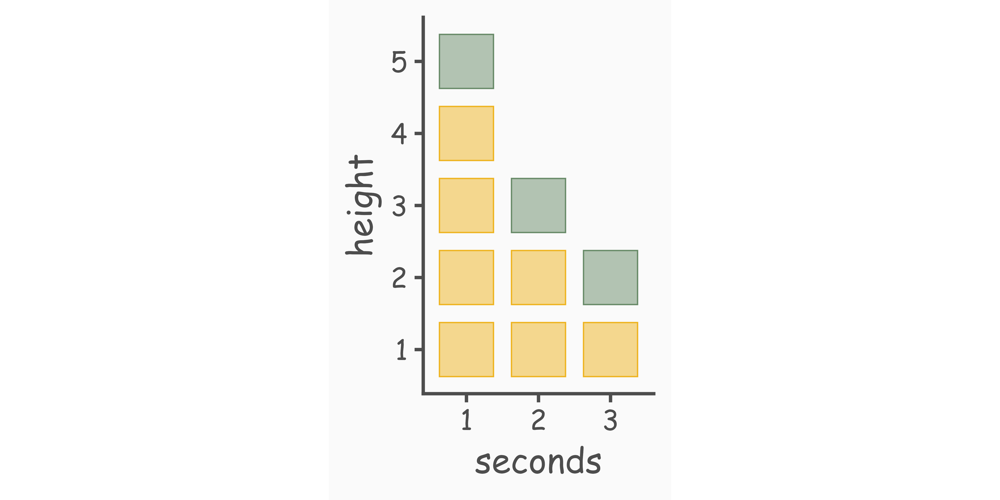
'real_fries_table |>
ggkids() +
use_x(seconds) +
use_y(height) +
chart_tile() +
set_color("goldenrod2") +
chart_tile(
data = imaginary_fries_table,
set_color("darkseagreen4")
)' |>
ggram::ggram(code = _, title = "Norm and Squatch and the Fry Eathing Contest")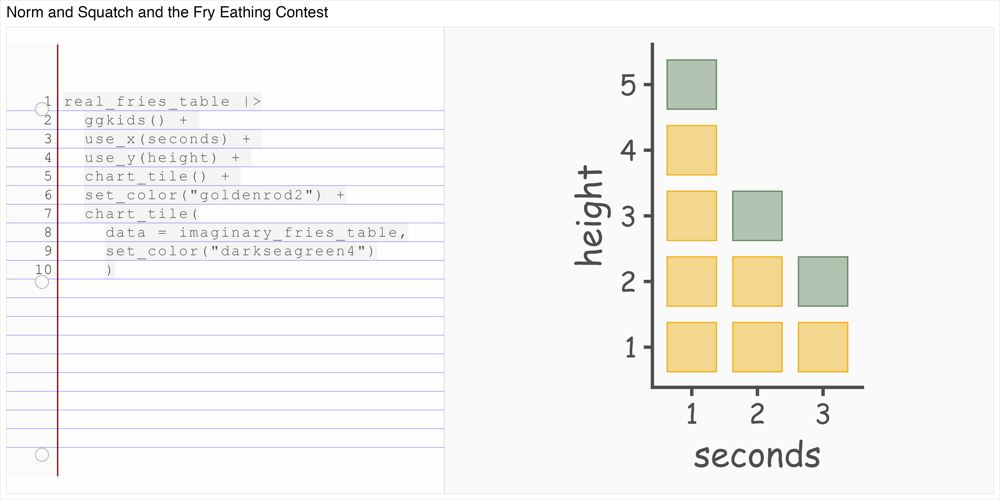
theme_chart_bar <- function(){
theme(panel.grid.minor = element_blank(),
panel.grid.major.x = element_blank(),
axis.ticks.x = element_blank())
}
chart_bar <- function(...){
list(theme_chart_bar(),
geom_label(vjust = 0, aes(label = after_stat(y), fill = NULL),
linewidth = 0),
geom_col(...),
scale_y_continuous(expand = expansion(c(0, .3))),
labs(x = NULL))
}
compute_item_stack <- function(data, scales, width = 0.2){
data$shape <- data$shape %||% data$picture
data |>
uncount(y) |>
dplyr::mutate(row = row_number()) |>
dplyr::mutate(y = row - 0.5) |>
dplyr::mutate(width = width)
}
chart_item_stack <- function(...){
list(
qlayer(
geom = GeomText,
stat = qstat(compute_item_stack)
),
# spacing
qlayer(
geom = GeomTile,
stat = qstat(compute_item_stack),
alpha = 0
),
scale_y_continuous(expand = expansion(c(0, .3))),
aes_default(aes(y = 1)),
aes_default(aes(x = "All")),
labs(x = NULL, y = NULL),
guides(y = "none"),
aes_default(aes(label = "⚫️"))
)
}
ggprop.test:::compute_group_bricks
#> function (data, scales, width = 0.2)
#> {
#> dplyr::mutate(dplyr::mutate(dplyr::mutate(data, row = row_number()),
#> y = row - 0.5), width = width)
#> }
#> <bytecode: 0x14fbb4c50>
#> <environment: namespace:ggprop.test>
jungle_table <- data.frame(tree = paste0("🌴#", 1:5),
num_bunches = c(2, 5, 1, 2, 1),
banana = "🍌")
jungle_table |>
select(x = tree, y = num_bunches, picture = banana) |>
compute_item_stack()
#> x picture shape row y width
#> 1 🌴#1 🍌 🍌 1 0.5 0.2
#> 2 🌴#1 🍌 🍌 2 1.5 0.2
#> 3 🌴#2 🍌 🍌 3 2.5 0.2
#> 4 🌴#2 🍌 🍌 4 3.5 0.2
#> 5 🌴#2 🍌 🍌 5 4.5 0.2
#> 6 🌴#2 🍌 🍌 6 5.5 0.2
#> 7 🌴#2 🍌 🍌 7 6.5 0.2
#> 8 🌴#3 🍌 🍌 8 7.5 0.2
#> 9 🌴#4 🍌 🍌 9 8.5 0.2
#> 10 🌴#4 🍌 🍌 10 9.5 0.2
#> 11 🌴#5 🍌 🍌 11 10.5 0.2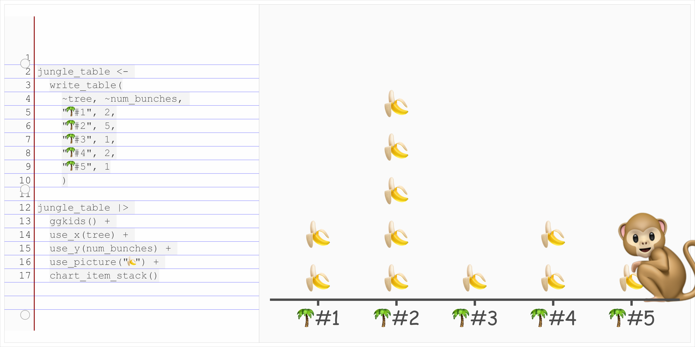
'senses_table <-
write_table(~order, ~sense, ~reps,
"1st", "👁️", 5,
"2nd", "✋", 4,
"3rd", "👂", 3,
"4th", "👃", 2,
"5th", "👅", 1)
senses_table |>
ggkids() +
use_x(order) +
use_y(reps) +
use_picture(sense) +
chart_item_stack()' |>
ggram::ggram(code = _, widths = c(1, 1.6))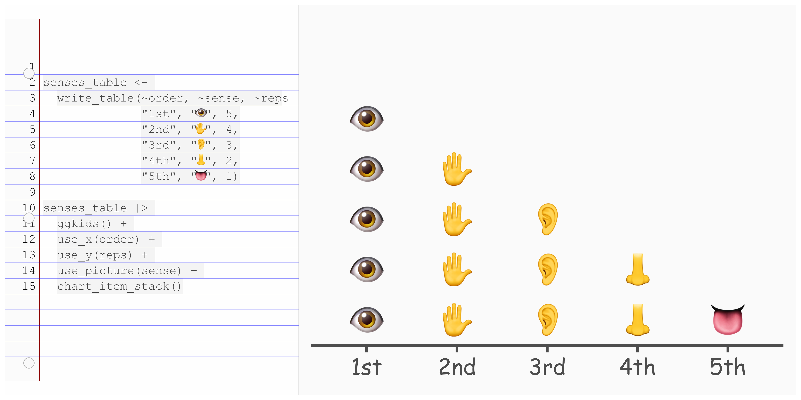
real_fries_table <- data.frame(id_fry = 1:7,
seconds = c(1, 2, 1, 1, 2, 3, 1),
height = c(1, 1, 2, 3, 2, 1, 4))
all_fries_table <- data.frame(id_fry = 1:10,
seconds = c(1, 2, 1, 1, 2, 3, 1, 1,2,3),
height = c(1, 1, 2, 3, 2, 1, 4, 5, 4, 2))
# last_plot() +
# annotate(geom = GeomText,
# x = I(.75), y = I(.72),
# label = "🎈🎀🙏",
# angle = -10,
# size = 22,
# ) 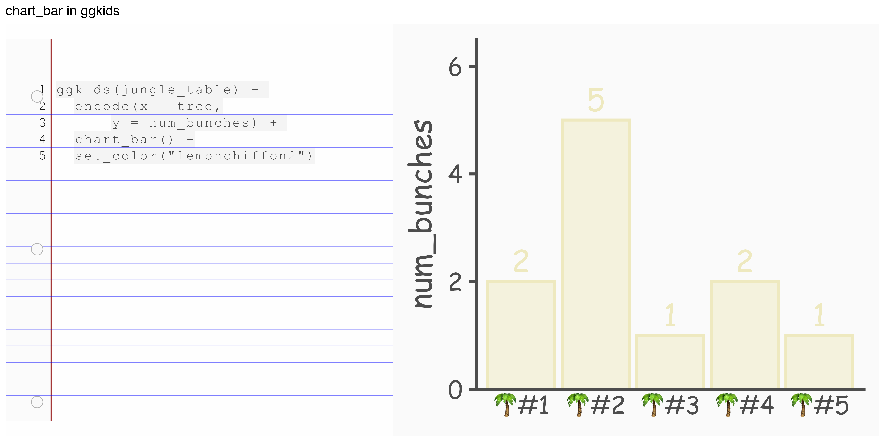
chart_bar_plunging <- function(...){
list(geom_label(vjust = 1, aes(label = after_stat(y), fill = NULL),
linewidth = 0),
geom_col(...),
theme_chart_bar(),
scale_y_reverse(expand = expansion(c(.3, 0))),
scale_x_discrete(position = "top"),
labs(x = NULL)
)
}
bears <- paste0("🐻❄️ #", 1:5)
depth <- c(3,5,4,6,5)
polar_bear_table <- data_frame(bears, depth)
usethis::use_data(polar_bear_table, overwrite = T)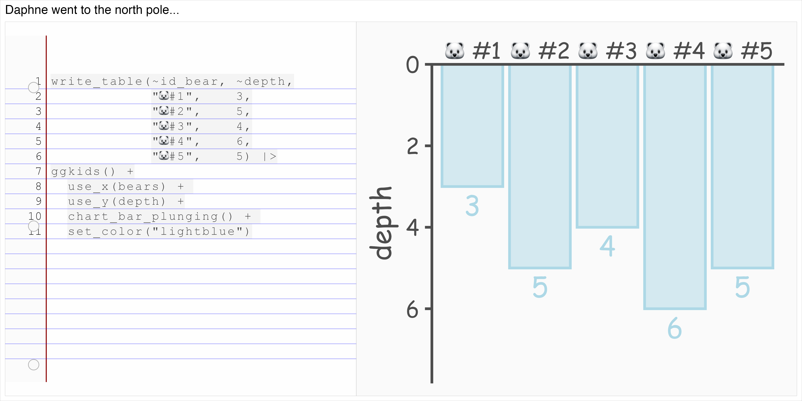
time <- c(0, 15, 30, 45, 60)
num_tunnels <- c(0, 4, 5, 5.5, 5.9)
fork_and_spoon_table <- data_frame(time, num_tunnels, type = "🍴")
shovel_and_bucket_table <- data_frame(time, num_tunnels = num_tunnels * 2, type = "🪣")
paws_table <- data_frame(time, num_tunnels = num_tunnels * 3, type = "🐾")
chart_line <- function(...){
list(geom_line(...),
aes_default(aes(group = 1))
)
}
digging_table <- fork_and_spoon_table |>
bind_rows(shovel_and_bucket_table) |>
bind_rows(paws_table)(future work)
outer_space_data <- data.frame(shuttle = paste0("🚀#", 1:6), fuel = c(.3,.5,.3, .8,.7, .4))
chart_portion_full <- function(...){
list(
geom_col(fill = "transparent", aes(y = 1)),
geom_col( ... ),
aes_default(aes(color = from_theme(ink)))
)
}
stamp_hline <- function(y = .5, linetype = "dashed", ...){
geom_hline(yintercept = y, linetype = linetype, ...)
}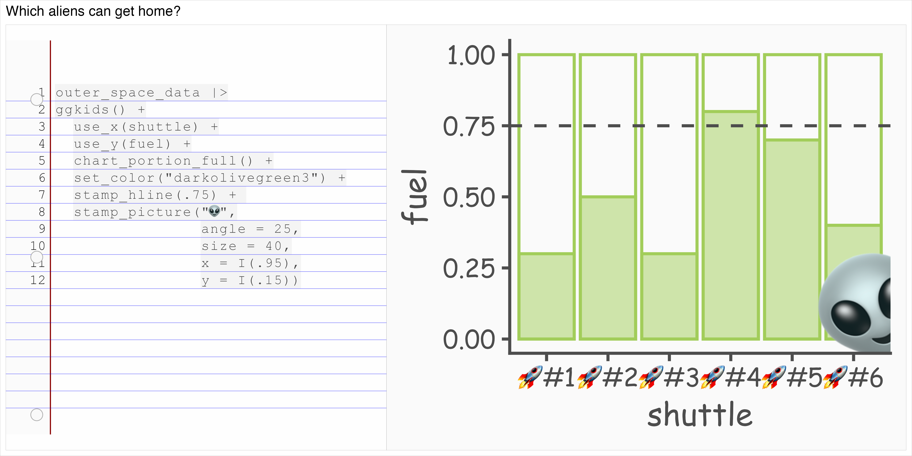
scale_y_counting <- function(breaks = 0:10000, ...){
ggplot2::scale_y_continuous(breaks = breaks)
}
scale_x_counting <- function(breaks = 0:10000, ...){
ggplot2::scale_x_continuous(breaks = breaks)
}
weeks <- c(0,1,2)
num_coins <- c(1,2,3)
coin <- c("🪙", "🪙🪙", "🪙🪙🪙")
scooter_table <- tibble(weeks, num_coins, coin)
usethis::use_data(scooter_table, overwrite = T)
compute_panel_count <- function(data, scales){
data |>
uncount(y, .remove = F)
}
scooter_table |>
select(x = weeks, y = num_coins) |>
compute_panel_count()
#> # A tibble: 6 × 2
#> x y
#> <dbl> <dbl>
#> 1 0 1
#> 2 1 2
#> 3 1 2
#> 4 2 3
#> 5 2 3
#> 6 2 3
chart_mark_count <- function(...){
list(
qlayer(geom = GeomText,
stat = qstat(compute_panel = compute_panel_count),
position = position_jitter(width = .12, height = .12),
..., show.legend = F),
aes_default(aes(x = 0)),
aes_default(aes(y = 0)),
aes_default(aes(label = "x")),
scale_size(range = c(2,10))
)
}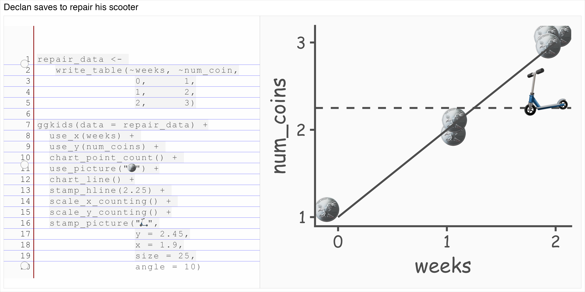
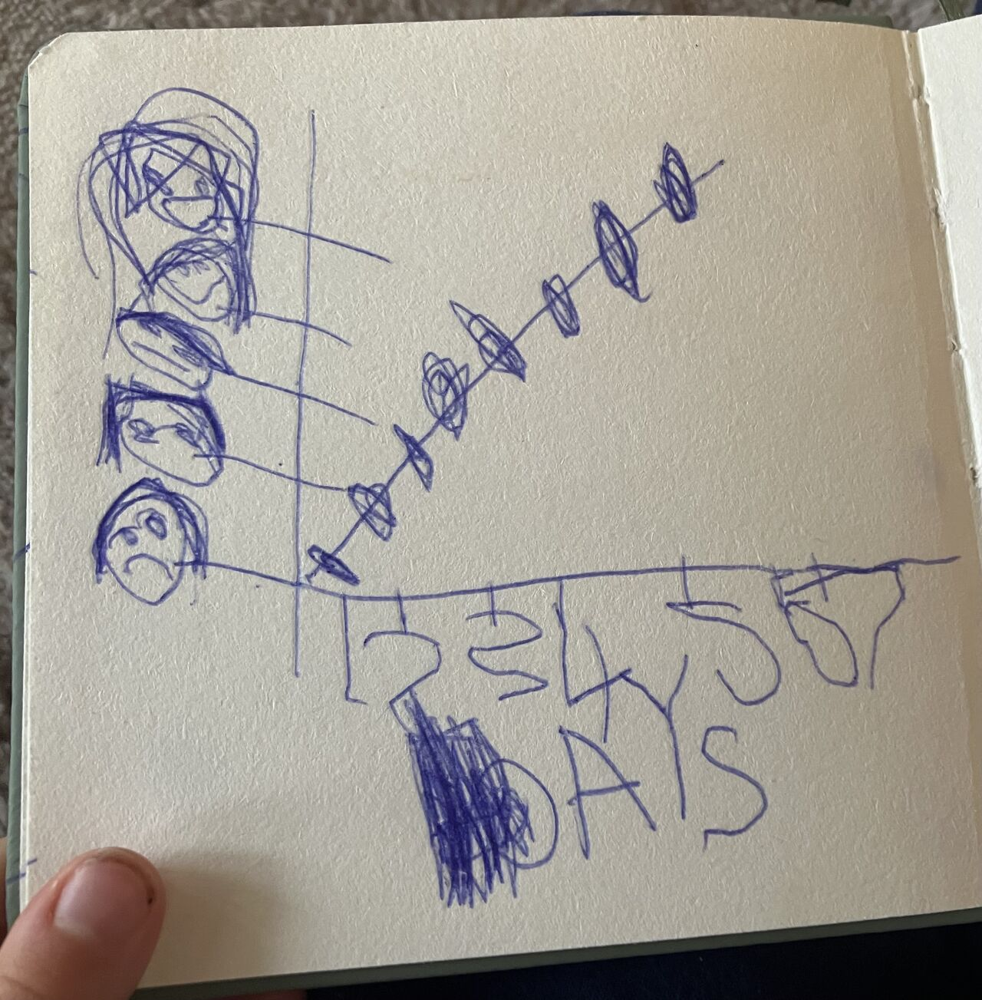
My 5-year-old was really excited to show me the graph that she made. It warmed my heart.
Not only does she already understand the need for evidence-based approaches for managing wellbeing, but she also appreciates the importance of tracking processes longitudinally and examining change over time.
Next on the agenda is a discussion of the difference between correlation and causation.
Stayed tuned. Tim Ballard, PhD
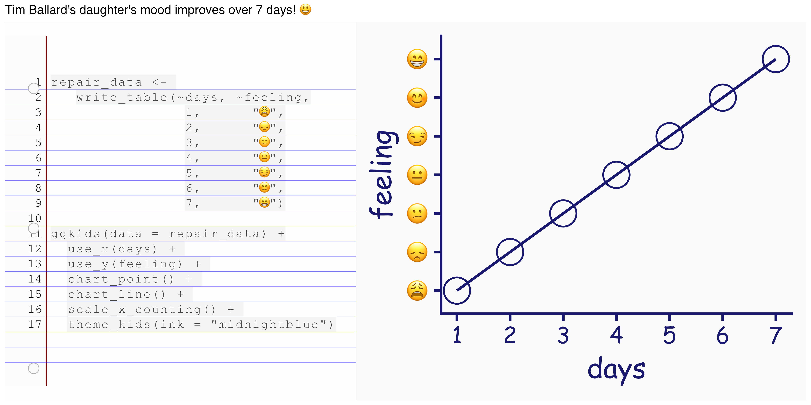
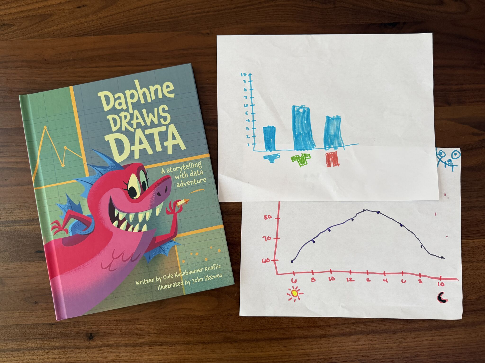
I’ve taught data visualization to hundreds of professionals (soon to be thousands!) but I was not prepared for how fun it would be to teach my 5-year-old.
I’ve been eagerly waiting to read Daphne Draws Data with him – a children’s book within the storytelling with data series – until he was old enough.
We read it before bed, and then proceeded to stay up 45 minutes past bedtime because he wanted to draw his own bar charts and line charts (for real, this isn’t one of those made-for-LinkedIn stories).
And I gotta say, while I’m always proud of all my students, I do now officially have a favorite
If you have a little one in your life between the ages of 5 and 10, this is the best $12 I’ve spent in a long time: https://amzn.to/3Q7GEwb
https://www.linkedin.com/in/morgandepenbusch/
'clothes_data <-
write_table(~clothing, ~num_items,
"🩲", 3,
"👕", 6,
"👖", 5)
ggkids(data = clothes_data) +
use_x(clothing) +
use_y(num_items) +
chart_bar() +
theme_kids(ink = "deepskyblue2")' |>
ggram::ggram(code = _, title = "A cool kid's clothes chart! 😃")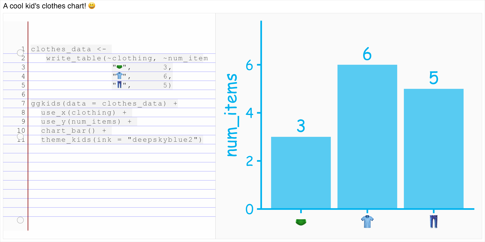
'temps_data <- write_table(~time, ~temp,
"6am\\n🌞", 60,
"8am", 70,
"10am", 80,
"12pm", 82,
"2pm", 84,
"4pm", 80,
"6pm", 78,
"8pm", 70,
"10pm\\n🌜", 65)
ggkids(data = temps_data) +
use_x(time) +
use_y(temp) +
chart_point() +
chart_line() +
set_color("black") +
theme_kids(ink = "red3",
base_size = 16) +
stamp_picture("🌞", x = .8 |> I(), y = .9 |> I(),
size = 20)' |>
ggram::ggram(code = _, title = "A cool kid's temperatures chart! 🥵😃")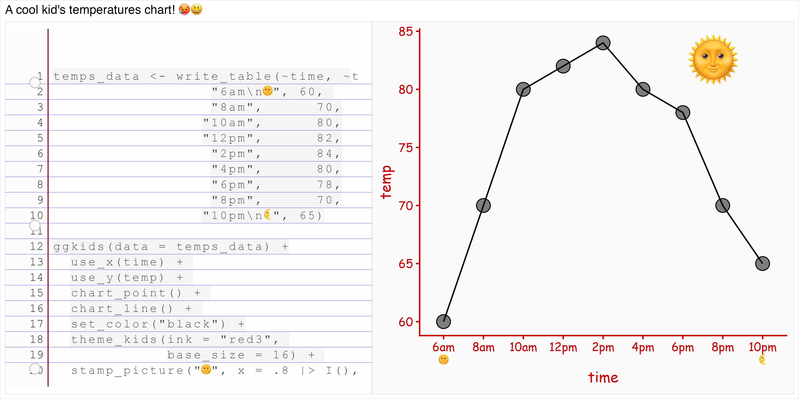
write_table(~car, ~count,
"🚗", 10,
"🚕", 5,
"🚓", 2) |>
ggkids() +
use_x(car) +
use_y(count) +
chart_item_stack() +
use_picture(car)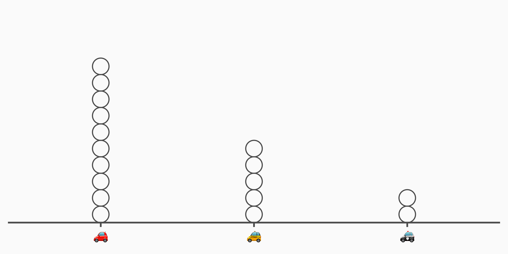
knitrExtra:::chunk_names_get()
#> [1] "unnamed-chunk-1" "setup" "unnamed-chunk-2" "theme_kids"
#> [5] "unnamed-chunk-3" "ggkids" "unnamed-chunk-4" "unnamed-chunk-5"
#> [9] "aes_to_use" "unnamed-chunk-6" "unnamed-chunk-7" "chart_pie"
#> [13] "unnamed-chunk-8" "unnamed-chunk-9" "unnamed-chunk-10" "crustaceans"
#> [17] "GeomPointFill" "unnamed-chunk-11" "unnamed-chunk-12" "unnamed-chunk-13"
#> [21] "unnamed-chunk-14" "unnamed-chunk-15" "unnamed-chunk-16" "jungle_table"
#> [25] "unnamed-chunk-17" "unnamed-chunk-18" "unnamed-chunk-19" "unnamed-chunk-20"
#> [29] "unnamed-chunk-21" "unnamed-chunk-22" "unnamed-chunk-23" "unnamed-chunk-24"
#> [33] "unnamed-chunk-25" "unnamed-chunk-26" "shuttles" "unnamed-chunk-27"
#> [37] "unnamed-chunk-28" "unnamed-chunk-29" "unnamed-chunk-30" "unnamed-chunk-31"
#> [41] "unnamed-chunk-32" "unnamed-chunk-33" "unnamed-chunk-34"